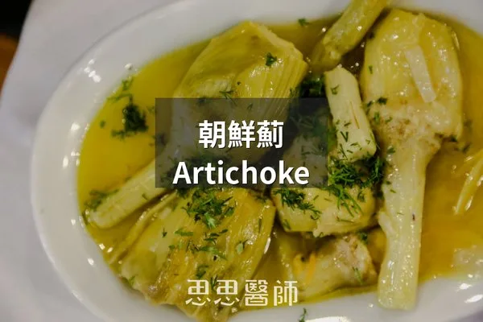
朝鮮薊 Artichoke
2026-10-10
朝鮮薊含有豐富的葉酸、維生素和礦物質，其洋薊酸和水飛薊素成分對肝臟健康、血脂改善和腸道健康有幫助，但膽道阻塞患者、孕婦和哺乳媽媽應避免食用。
340 篇文章

朝鮮薊含有豐富的葉酸、維生素和礦物質，其洋薊酸和水飛薊素成分對肝臟健康、血脂改善和腸道健康有幫助，但膽道阻塞患者、孕婦和哺乳媽媽應避免食用。
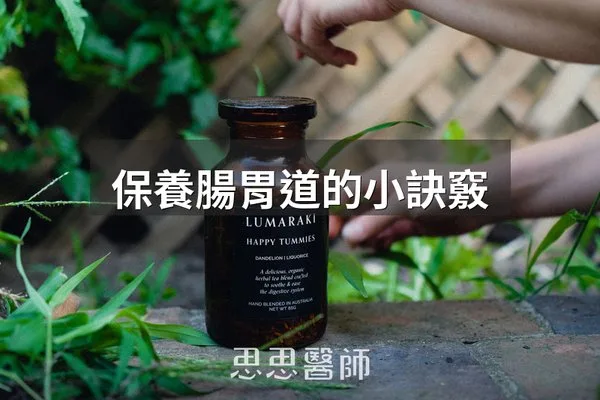
保養腸胃道應在清晨補充電解質、用蒸煮代替炒炸、進食時專注進食、每日至少12小時不進食、練習腹式呼吸並避免非必要服用抗生素。
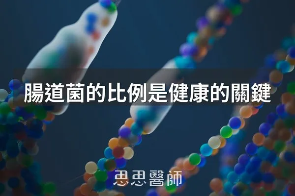
F:B 比值是 Firmicutes 與 Bacteroidetes 的比例，過高或過低各代表不同的腸道狀態，可從原型食物、多樣纖維、睡眠與壓力調整。
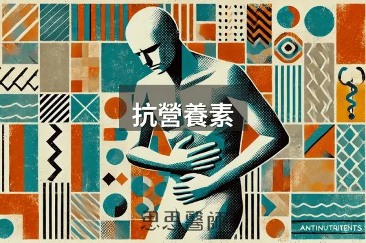
植物中含有的抗營養素會阻礙營養吸收，素食者需了解並避開這些成分，才能維持健康的植物性飲食。
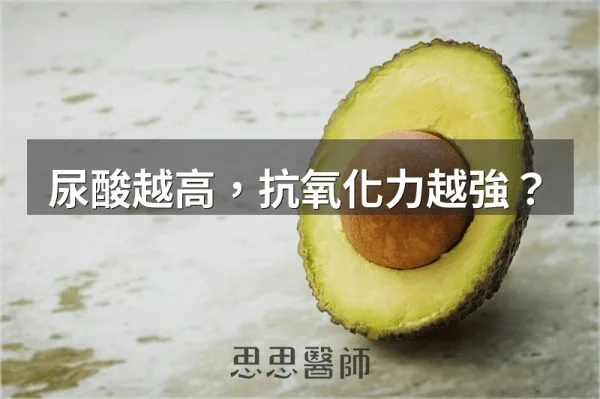
尿酸確實是血漿中重要的抗氧化物質，但進入細胞內會促氧化，大型研究也顯示尿酸越高代謝風險越高，不能以此當作安心理由。
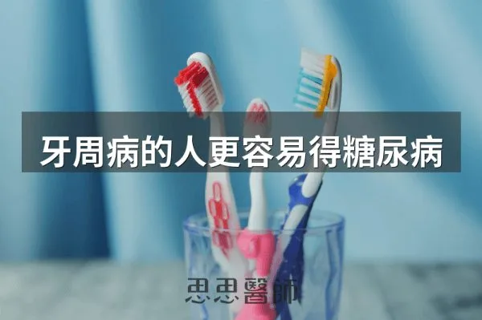
牙周病與糖尿病互為雙向關係，牙周發炎會影響胰島素訊號，Cochrane 分析顯示牙周治療3到4個月後 HbA1c 平均下降0.43%。
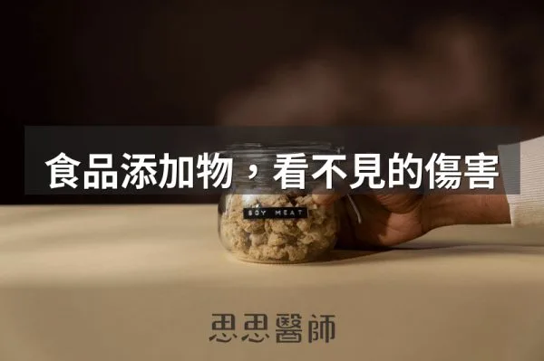
人工甜味劑、乳化劑、反式脂肪、色素等添加物改變腸菌組成、破壞腸道屏障，容易引發腸漏和慢性發炎，需從飲食移除這些干擾因子。
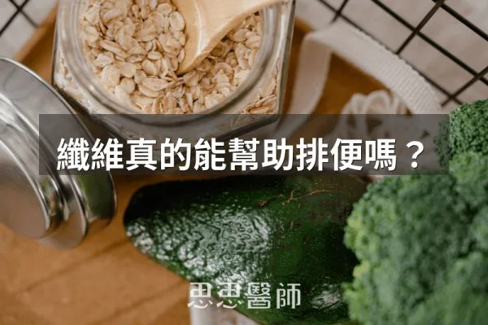
2012 年新加坡研究顯示特發性便祕患者停掉纖維後排便頻率改善，但這不代表纖維沒用，而是不是每個人都適合高纖。
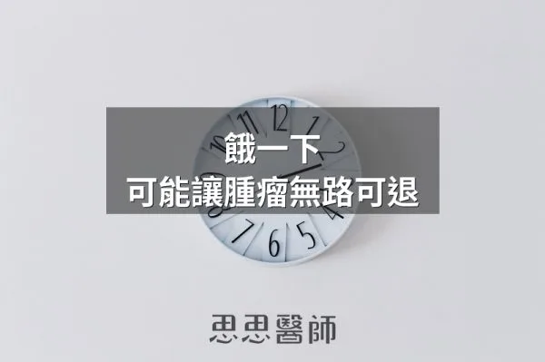
模擬斷食飲食能啟動正常細胞的保護機制，同時讓腫瘤細胞變脆弱，搭配化療可能提升療效、減少副作用。
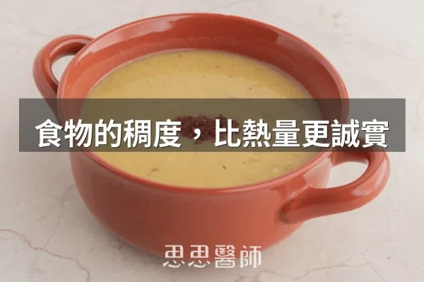
Jason Fung 提出食物稠度影響飽足感，研究顯示稠的飲品讓之後披薩進食量較少，因此避免把熱量喝掉比計算熱量更有效。
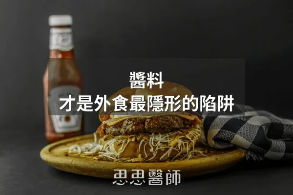
外食時醬料常藏著大量糖與種子油，作者習慣只看糖和用什麼油，建議避開糖排前三項或種子油底的醬料，或改用沾的。
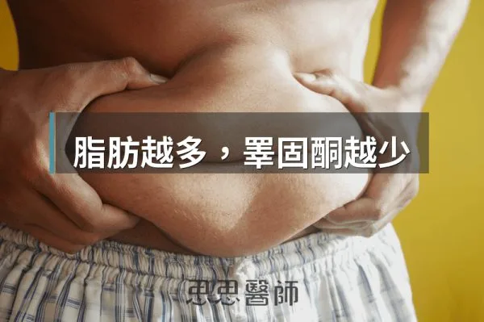
脂肪組織裡的芳香化酶會把睪固酮轉換成雌激素，體脂越多轉換越多，形成睪固酮下降與體脂增加的惡性循環。
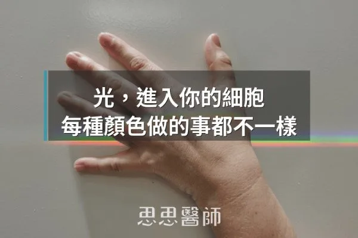
不同波長的光透過觸動生色團激活特定的細胞信號，藍光殺菌但影響褪黑激素、紅光與近紅外線能提升粒線體能量生成。
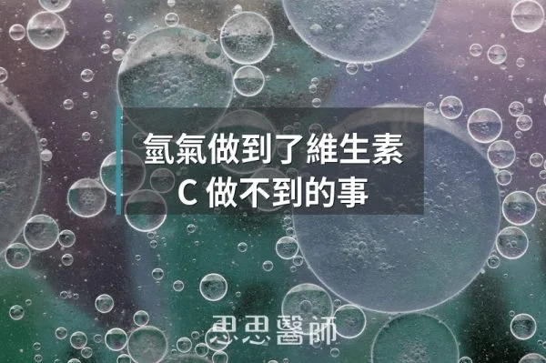
氫氣選擇性清除最毒的羥自由基而不傷害有生理功能的活性氧，能啟動細胞抗氧化系統並保護粒線體，特別在脂肪肝治療上有臨床證據。
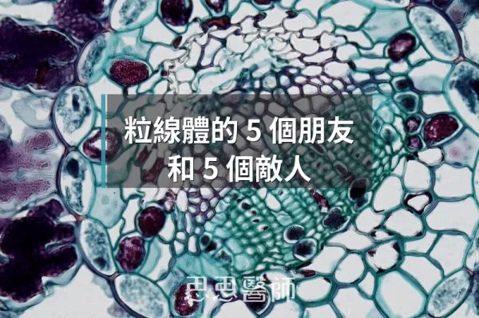
中低強度有氧運動、間歇性斷食、充足睡眠能保護粒線體功能，而長期酗酒、睡眠不足、慢性壓力則會直接損害粒線體結構。
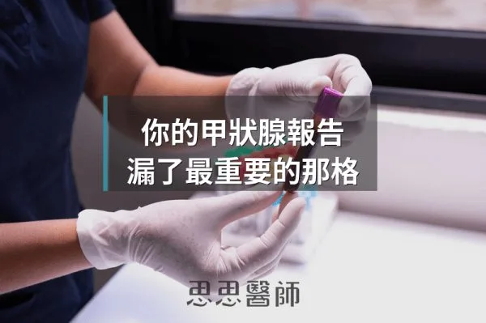
光看 TSH 和 T4 正常，無法確認身體有足夠的 T3 進行代謝，部分患者需加驗 Total T3 以評估 T4 轉換效率。
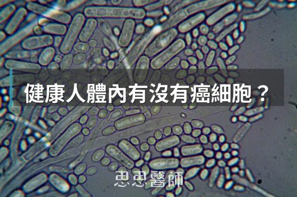
屍解研究發現無症狀人群體內普遍存在微型腫瘤，免疫系統透過清除、平衡、逃脫三階段持續監控，決定這些異常細胞會否發展成癌症。
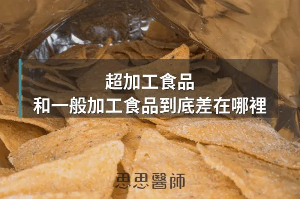
超加工食品含有乳化劑與改性澱粉等添加物，會破壞食物基質、傷害腸道菌相，同時繞過飽足感訊號，導致過量進食。

澱粉冷藏後能形成抗性澱粉的效果取決於直鏈澱粉比例，長粒米和義大利麵冷藏有效，糯米和地瓜效果有限。
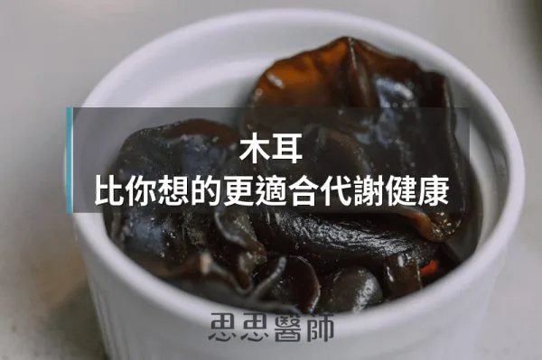
木耳含有的多醣體和膳食纖維，透過改善腸道菌相、降低飯後血糖峰值，對胰島素阻抗和代謝健康有幫助。
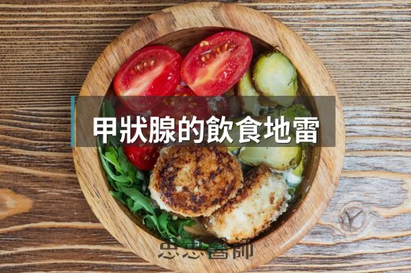
甲狀腺的五種飲食地雷包括麩質、乳製品、精製碳水、酒精與咖啡因，橋本氏患者可優先排除麩質和乳製品並觀察 8 到 12 週。
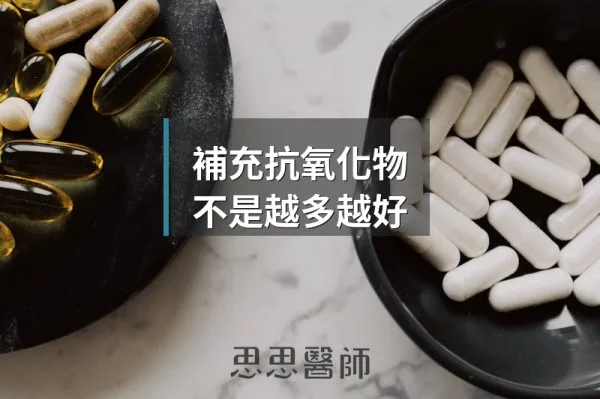
過量抗氧化物補充反而增加死亡風險，適度活性氧對細胞訊號傳遞、修復機制與整體免疫功能具必要性。
過量進食導致粒線體電子傳遞鏈電子堆積，形成超氧化物自由基增加氧化壓力，直接損傷粒線體DNA。
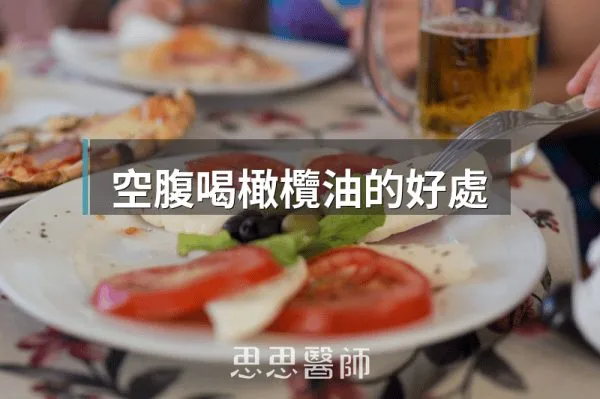
新鮮橄欖油含有油橄欖素活性物質，以COX抑制機轉發揮消炎作用，效果遠優於布洛芬且完全不傷胃肝。
體脂過低會因瘦素不足使月經消失，過高則造成瘦素阻抗與生育問題，體脂與代謝環境是影響女性生育力的重要關鍵。
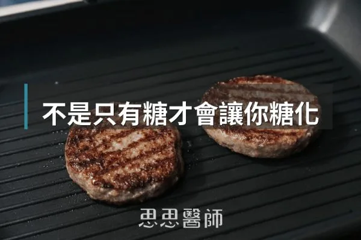
糖化終產物不只來自糖，高溫烹調的蛋白質與脂肪也會產生 AGEs，所以控糖者也要注意烤、炸等烹調方式，並減少頻率。
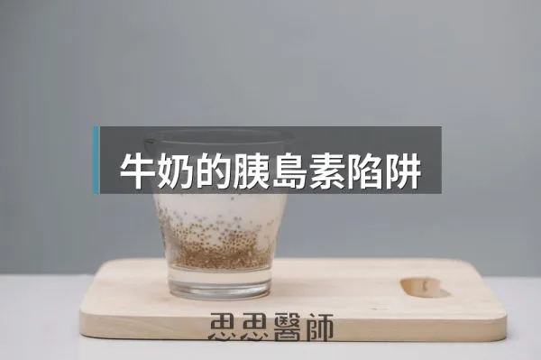
牛奶升糖指數低但刺激胰島素分泌幅度意外高，其胰島素指數逼近白麵包，對血糖和代謝有特殊影響。
安眠藥可在高壓期短期使用且建議兩週內；傳統藥物會壓縮深眠，ramelteon 與 lemborexant 對睡眠結構較友善，也可用 CBT-I。
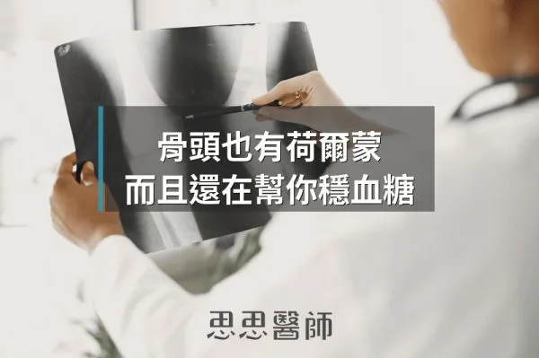
骨頭是內分泌器官，造骨細胞分泌的骨鈣素參與血糖調控，需維生素 K2 活化，糖尿病患者骨密度正常仍可能有較高的骨折風險。
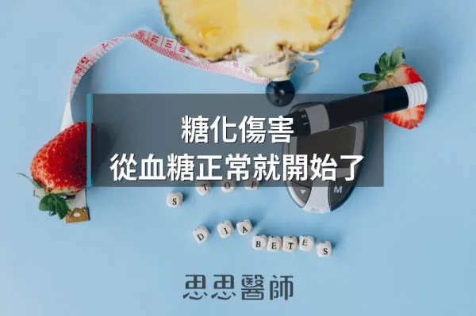
甲基乙二醛（MGO）的糖化能力約為葡萄糖的兩萬倍，血糖尚未達糖尿病標準時就可能累積，控制血糖波動並支持麩胱甘肽有助降低累積。
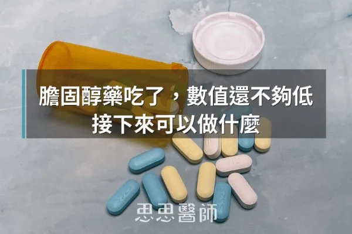
降膽固醇藥吃了 LDL 仍不夠低時，可與醫師討論加 Ezetimibe，並搭配植物固醇、小檗鹼與可溶性纖維，已服他汀者應避開紅麴保健品。
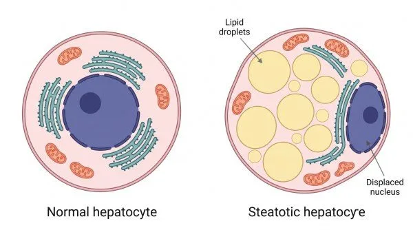
脂肪肝是肝細胞內游離脂肪酸等造成內質網壓力、粒線體損傷、細胞死亡，進而引發發炎與纖維化的連鎖傷害過程。
消除脂肪肝的運動強度沒有想像中重要，中等強度有氧運動足以有效改善肝臟脂肪，比高強度訓練更可持續。
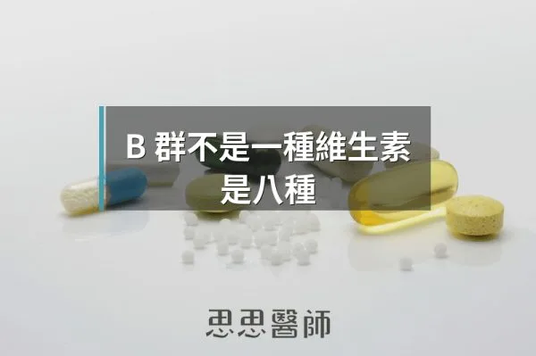
B族維生素是八種獨立的維生素，各自參與不同的能量代謝和神經功能途徑，缺乏會影響多個生理系統。
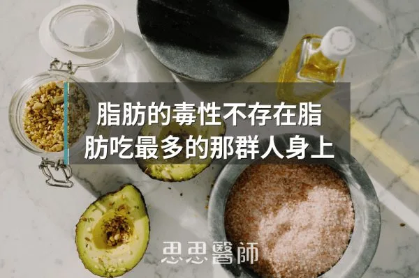
脂毒性並非吃脂肪造成，而是肝臟用過量碳水自製脂肪，加上脂肪組織失能溢出游離脂肪酸，低碳高脂者三酸甘油酯反而可能較低。
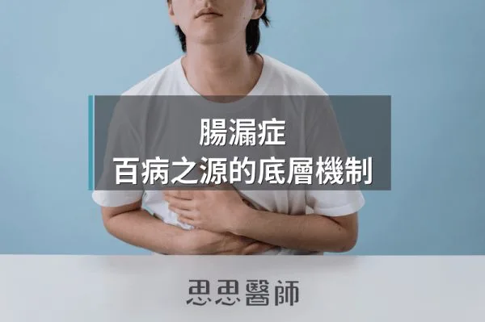
腸漏症因緊密連結蛋白破壞增加腸道通透性，導致細菌內毒素進入血液，引發持續多年的全身發炎反應。
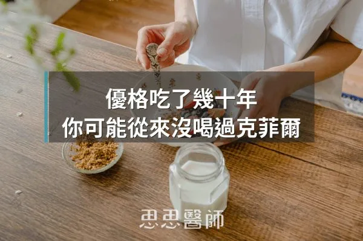
克菲爾與優格差異很大，克菲爾含 30 到 50 種以上微生物且有酵母菌，文獻顯示它對腸道菌多樣性與乳糖不耐可能更有幫助。
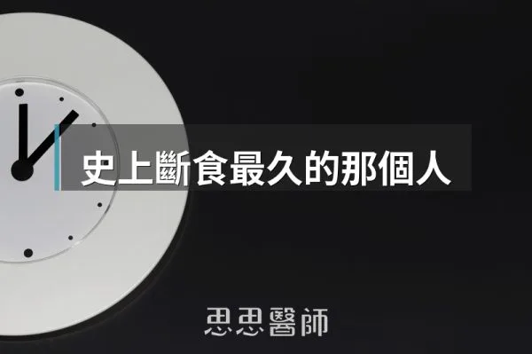
1965年蘇格蘭的 Angus Barbieri 在醫療監督下斷食382天，體重從207公斤降到82公斤，但作者強調案例極端，不建議任何人仿效。
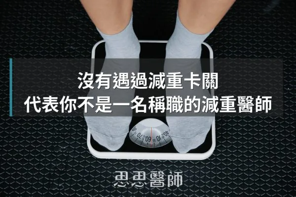
減重卡關常有多重原因，包括代謝下降、肌肉流失、荷爾蒙問題、藥物、睡眠、隱藏熱量與腸道菌相，需逐一查清楚再處理。
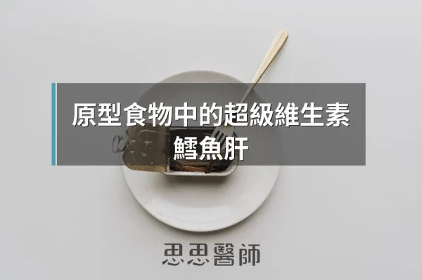
鱈魚肝罐頭的 omega-3 與維生素 D 含量遠高於沙丁魚，維生素 A 也極高但有攝取上限，作者建議每週兩到三次、每次一到兩湯匙。
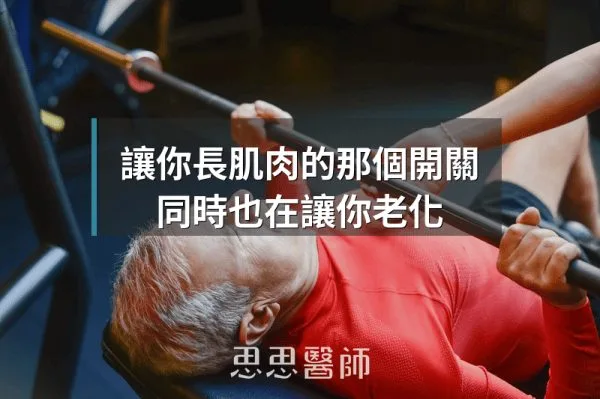
Valter Longo 的研究指出，50 至 65 歲高蛋白飲食與較高死亡率相關，因 mTOR 長期活化可能加速老化，65 歲以上則需吃夠蛋白質。
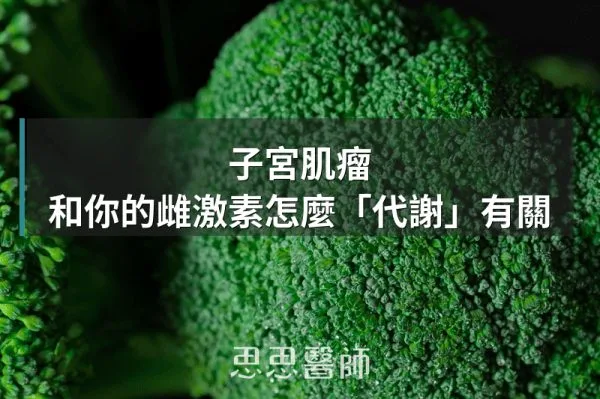
子宮肌瘤與雌激素代謝路徑相關，十字花科蔬菜、DIM補充、綠茶兒茶素與維生素D可改善代謝方向減緩肌瘤成長。
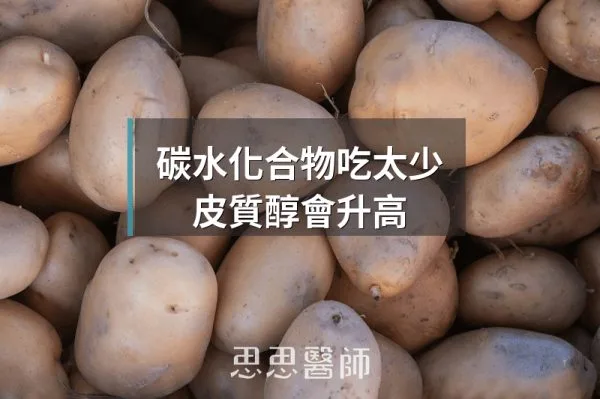
極低碳水化合物攝取可能升高皮質醇，全食物碳水透過色胺酸途徑提升血清素，有助降低壓力荷爾蒙反應。
研究指出人一天能維持高品質專注的時間約四小時，短暫休息無法完全恢復，把腦力工作放在早上並顧好睡眠更重要。
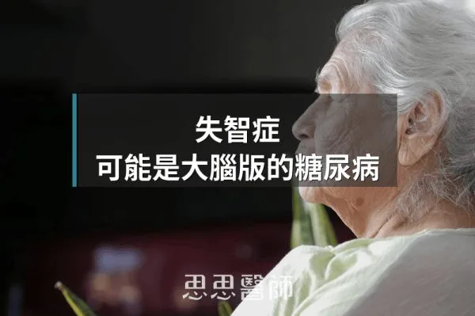
阿茲海默症可視為大腦特有的胰島素阻抗疾病，涉及胰島素訊號失調和澱粉樣蛋白清除障礙，代謝控制攸關腦部健康。
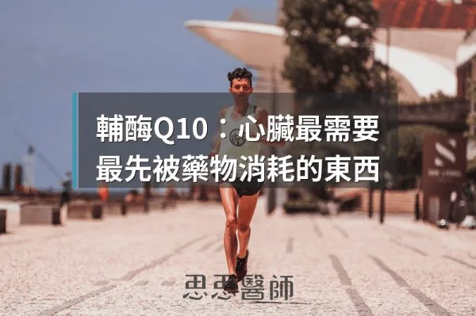
輔酶Q10隨年齡增長自然下降，並被他汀類藥物進一步消耗，補充對心臟衰竭患者死亡風險有顯著改善作用。
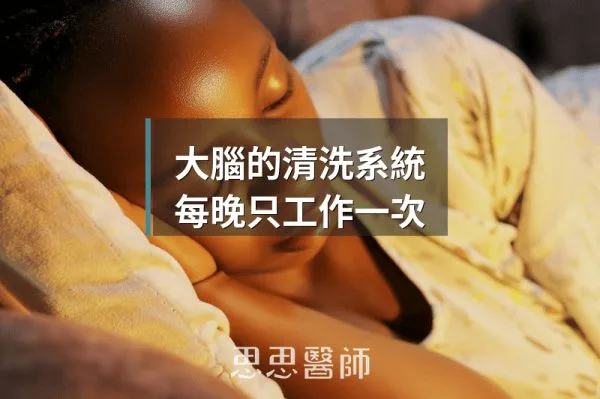
大腦膠質淋巴系統主要在深睡期間清除澱粉樣蛋白和濤蛋白廢物，睡眠不足導致廢物堆積增加阿茲海默症風險。
磨牙由腦幹控制非咬肌自主，與慢性壓力升高皮質醇、神經傳導失衡、鎂缺乏或睡眠呼吸中止症有關，需從根源改善。
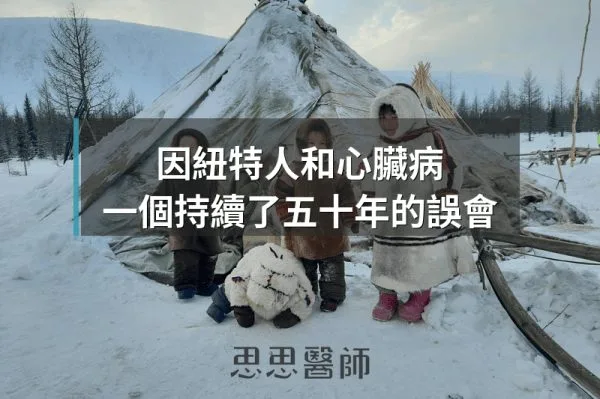
因紐特人因低碳飲食無心臟病的說法流傳五十年，但實際研究顯示他們的心血管疾病發生率與其他族群相近甚至更高。
女性睪固酮從三十幾歲開始下降，停經後進一步下降，不足會影響肌肉、骨密度、認知與情緒，單獨補充雌激素無法解決。
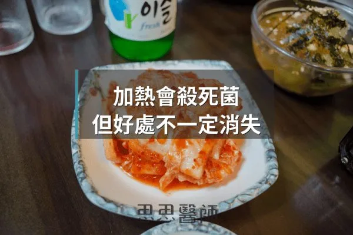
發酵食物加熱後活菌死亡，但其中的有機酸、細胞壁成分與生物活性胜肽仍留存，對腸道環境和免疫系統仍有作用。
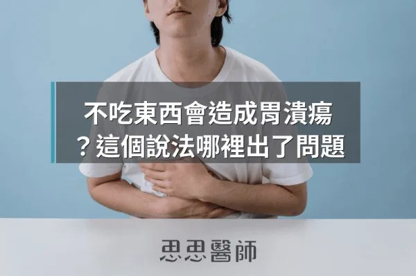
不吃東西會傷胃的說法缺乏根據，胃酸在進食時分泌最多，胃潰瘍主因是幽門螺旋桿菌感染與長期使用 NSAIDs，而非空腹。
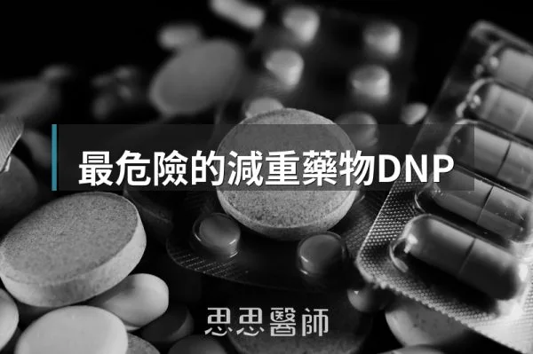
DNP 曾在 1930 年代被當作減重藥，靠干擾粒線體能量生產使代謝暴增，但劑量窗口極窄、副作用致命而被禁。
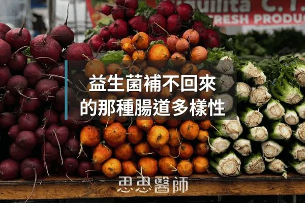
史丹佛對哈扎人的研究顯示，腸道菌相要靠食物纖維與植物種類的多樣性維持，益生菌無法取代多樣的食物。
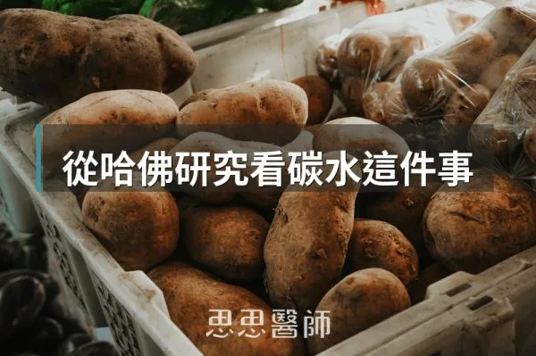
哈佛 2023 年追蹤 136,432 人 24 年，發現澱粉類蔬菜讓體重上升最多，水果與非澱粉類蔬菜則較少增重，但胰島素阻抗者仍要少吃水果。
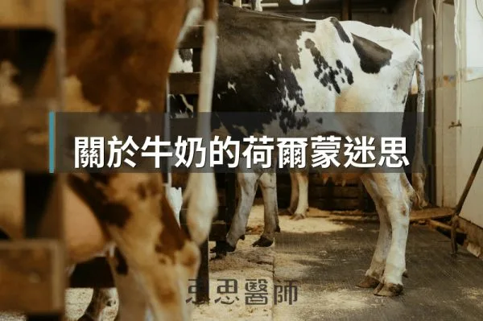
台灣禁用 rBST，但懷孕奶牛乳汁的雌激素會上升且人體有吸收，文中指出對健康的影響尚無定論，建議適度減少攝取。
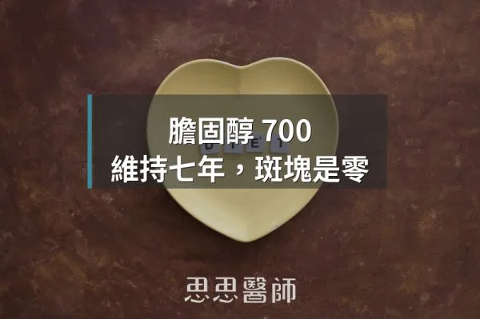
一位總膽固醇 705 mg/dL 的男性維持近七年，電腦斷層顯示斑塊體積為 0 mm³，作者以此個案介紹 LMHR 與脂質能量模型。
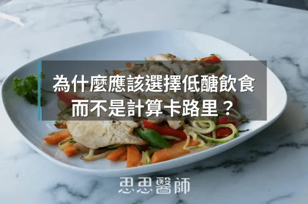
2026 年研究追蹤 195 位第 2 型糖尿病患者，低醣介入組 21 項發炎指標中 19 項顯著改善，作者據此說明低醣與單純少吃的差異。
作者自己做五天鯖魚斷食，氣酮升到 23.0 ppm、空腹血糖由 107 降到 85 mg/dL，並討論其限制，屬個人經驗分享。
LDL 受抽血前約 72 小時飲食影響，Dave Feldman 改吃白吐司七天讓 LDL 從 296 降到 83 mg/dL，單次數值代表性有限。
選魚時應看食物鏈位置，沙丁魚、鯖魚等小型魚汞含量遠低於大眼鮪魚，且含硒可中和汞；文中也談到鎘、鉛、砷等其他污染物。
Norwitz 吃一個月沙丁魚後變得耐冷，文中整理 2026 年 Cell 研究：EPA 轉成 12-HEPE，經 Olfr110 受體促進燃脂。
秋刀魚Omega-3含量最高達3.77克/100克，帶骨罐頭沙丁魚鈣質382毫克/100克最豐富，鯖魚最常見，選擇取決於補充優先順序。
魚斷食透過高蛋白保肌肉、高Omega-3啟動FGF-21和脂肪燃燒，進入類斷食代謝狀態卻難達深層自噬，相比水斷食各有不同機轉側重。
嘉磷塞可能干擾粒線體並增加氧化壓力，文中指出台灣標準篩檢方法偵測不到它，有機標章也不等於沒有殘留。
發酵乳製品中乳酸菌消耗Neu5Gc減少免疫發炎、分解A1casein危害和乳糖、產生維他命K2，陳年起司與新鮮乳製品代謝影響完全不同。
血糖變異係數比HbA1c更能反映血糖波動傷害，需持續血糖監測計算，健康人CV平均17±3%而非糖尿病篩查標準36%，長期穩定<15%符合代謝健康目標。
排毒管道包括膠淋巴系統深睡期清理類澱粉蛋白、汗液排重金屬和BPA、腸肝循環高效率排便，三者都無需補充品純靠生活方式運作。
身體無『必需碳水化合物』分類但非完全無需，紅血球無粒線體只代謝葡萄糖，人類AMY1澱粉酶基因演化中持續複製說明身體對醣的適應需求。
超過65℃熱飲被世衛列為2A級致癌物，反覆熱傷害導致食道黏膜慢性發炎累積基因突變，英國研究發現習慣喝超熱飲者食道鱗狀細胞癌風險高2.5倍。
靜脈維他命C血漿濃度達口服極限的60–100倍，機制是生成H₂O₂促癌細胞氧化死亡，治療期間需避免同日給銅和麩胱甘肽並確保足夠銅質補充。
1050毫克卡姆果原汁降低發炎指標但同量維他命C純錠無效，食物基質內生物類黃酮發揮獨立作用，口服上限受SVCT1蛋白質飽和限制約200–400毫克。
2025年美國飲食指南終止低脂乳製品優先建議，全脂牛奶含C15:0和C17:0降低第二型糖尿病風險30%，去脂肪同時失去保護成分及延緩乳糖吸收的機制。
血糖機測葡萄糖不測果糖，水果同含三種糖並經蔗糖分解，果糖進肝臟繞過血糖控制轉化為脂肪和尿酸，血糖讀數只揭示代謝故事的一部分。
益生菌通過胃酸到腸道的存活率僅20–40%，腸溶型可超過50%但普通膠囊低於1%，停止補充後2–7天內迅速消失，無特定症狀的健康人無須長期補充。
哈佛 2014 年研究讓受試者短期吃純動物性或純植物性飲食，發現腸道菌相隔天就明顯改變，停止後兩天內即恢復基線。
飯後血液指標反映胰島素反應與代謝控制的實際狀況，往往比飯前數值更能說明真實身體狀態。
血液三酸甘油酯的主要來源是肝臟用糖製造的，而非直接來自食物脂肪，吃糖越多製造越多。
18 度的睡眠溫度說法針對平均健康成年人，長輩、女性與亞熱帶的人未必適用，文中建議依個人體質調整並可睡前穿薄襪。
只吃蛋白、丟掉蛋黃可能缺乏膽鹼而導致脂肪肝，文中說蛋黃的膽鹼不易轉成 TMAO，建議每天吃兩到三顆全蛋。
咖啡中最有價值的成分可能是綠原酸而非咖啡因，文中說它與血糖控制相關且怕熱，淺焙保留的含量遠高於深焙。
文中引述 Mark Hyman 的建議，每天多吃 10 到 20 克纖維可改善血糖控制與發炎，並提供加倍蔬菜量、纖維密度高食物等實用做法。
納豆激酶的正向結果主要來自每天 10,800 FU 的高劑量，3,600 FU 無效，文中提醒使用抗凝血藥物者不可自行補充。
餐廳常用的種子油（大豆油、葵花油、玉米油）亞油酸含量極高，反式脂肪代謝過程緩慢需六年消除。
吃進的脂肪不會直接變成體脂，但攝取超過個人消化能力就是太多，文中列出腹瀉或漂浮便、右上腹悶痛、體重停滯等訊號。
研究顯示先吃蔬菜和蛋白質、最後才吃碳水，能讓餐後血糖高峰降低，文中提到糖尿病前期族群的血糖曲線下面積降低了 38.8%。
牙周病菌牙齦卟啉單胞菌會分泌牙齦蛋白酶，能穿越血腦屏障進入大腦，參與阿茲海默症的病程機制。
胰島素阻抗在青春期會直接抑制成長激素與IGF-1分泌，青春期胰島素敏感度下降約50%，影響身高。
依 Huberman 的說法，反覆追逐小刺激會壓低多巴胺基線，文中提出減少低品質刺激、晨間曬太陽、冷暴露與刻意無聊四種方法。
2007 年一項大鼠研究發現 94% 的老鼠在糖精水與古柯鹼之間選了糖精，作者藉此說明甜味是超常刺激，減糖要靠環境設計而非意志力。
介紹 Siim Land 以代謝自噬為核心的抗老做法：每天兩餐、規律阻力與有氧訓練、少量補充品，作者欣賞他不極端而可持續。
多酚是腸道好菌偏好的食物，發酵後產生短鏈脂肪酸、強化腸壁，文中建議從橄欖油、莓果、綠茶等日常食物攝取，並先把腸道環境養好。
人體有獨立的蛋白質偵測系統，蛋白質比例不足時會持續發出飢餓訊號，驅動著整體熱量攝取大幅增加。
現代人體溫比19世紀下降約0.59°C，反映感染率降低、恆溫環境普及與身體活動量持續減少。
Akkermansia muciniphila透過維護腸道屏障改善胰島素敏感度，但補充效果因原有菌量基礎而異。
曾訓練的肌肉保留更多肌細胞核與表觀遺傳記憶，重新開始訓練時肌肉增長速度明顯快於初次學習者。
大蒜中的二烯丙基硫化物在小鼠實驗中延長壽命效果達11.4%，近似於二甲雙胍抗老效果的兩倍。
Zone 2和HIIT訓練目標不同，Zone 2建立粒線體基礎，HIIT提升最大攝氧量，兩者相輔相成。
CKD-EPI公式比MDRD更準確，特別是在正常和輕度腎功能下降時健檢族群應優先參考此數值。
冬眠動物代謝率降至正常的1-5%，同時啟動Akt/mTOR與FOXO3a等多條延壽相關的分子路徑。
HDL膽固醇超過80至100 mg/dL時，其膽固醇逆向轉運功能可能受損，反映全身代謝失調狀態。
夜間生長激素、皮質醇降低和褪黑激素的抗氧化作用共同推動皮膚修復和更新，睡眠品質直接影響膚況。
植物蛋白的消化率和必需胺基酸組成低於動物蛋白，欲達相同效果需提高攝取至每公斤1.2克以上。
Omega-7特別針對上皮細胞和皮脂腺，能修補皮膚和腸道黏膜的屏障損傷，改善皮膚保水能力。
血糖劇烈波動而非平均血糖值才是氧化壓力與血管破壞的關鍵驅動因素，餐後尖峰與快速下降會導致粒線體過度產生超氧化物。
乳清蛋白在缺乏運動時會過度激活mTORC1導致胰島素阻抗惡化，搭配阻力訓練時則能精準將胺基酸推進肌細胞合成肌肉。
減重後膽固醇升降取決於原始體型與飲食方式，精瘦者嚴格低碳可能因能量運送需求導致LDL升高，添加健康碳水通常能改善。
健檢數字正常、沒有代謝症候群不等於代謝健康，亞洲人在較低 BMI 就可能有風險，文中強調飲食、睡眠、運動與壓力管理的日常維護。
40 歲後肌肉每年流失約 0.8% 至 1.0%，會拉低基礎代謝、增加血糖波動與胰島素阻抗風險，文中建議靠阻力訓練與足夠蛋白質守住肌肉。
GLP-1 藥物減重常伴隨肌肉流失，文中主張用藥期間每週至少兩次阻力訓練並攝取足夠蛋白質，讓肌肉分泌的肌肉動素接手，降低停藥後復胖。
不肥胖但HDL低的人心血管風險並不低，高HDL來自規律運動與適度碳水化合物攝取，低HDL可能反映隱性代謝失調。
作者參訪傳統醬油工廠後分享心得，說明黑豆全豆釀造與 180 天以上日曬熟成的工藝，並提醒醬油主要用來提香，不必倒太多。
Omega-7 被稱為脂肪因子，文中說它能協助處理糖分、強化腸道防線、關閉 NF-κB 發炎開關並守護胰島素分泌細胞，沙棘果與夏威夷豆是主要來源。
HMB 是白胺酸的代謝產物，作者介紹它偏向防止肌肉流失、減少運動後損傷，適合肌少症長輩與減脂族群，每日常見劑量 3 公克。
丙二醛（MDA）是脂質過氧化的終產物，血中濃度反映全身氧化壓力程度，比傳統抗氧化標記更敏感。
作者修正過去的建議，認為吃蛋糕最好在高強度阻力訓練後 30 至 60 分鐘內，此時肌肉糖原缺口與 GLUT4 活性可讓糖分優先被肌肉吸收。
各類脂肪酸（飽和、Omega-3、6、7、9 與反式）進入體內會啟動不同生理路徑，作者簡介其作用，強調來源與比例比名稱更重要。
油脂是大腦結構與賀爾蒙合成的重要原料，刻意滴油不進對大腦與內分泌不利，作者強調減重時不該恐油，要選擇優質油脂。
作者說明傳統療法增加乳癌風險主要來自合成黃體素，生物等同性荷爾蒙與經皮吸收較安全，有子宮者須搭配黃體酮，並重視肝臟與腸道代謝。
牛津大學團隊 2025 年研究指出 GLP-1 藥物可能修復腦部能量代謝並抑制發炎，Semaglutide 使用者阿茲海默症風險降低約 67%。
吃糖傷牙的關鍵在於頻率：頻繁吃糖會讓口腔長時間處於酸性、來不及再礦化，建議把甜食集中在正餐前後並限制進食次數。
一項隨機對照交叉試驗發現，餐後僅 1 分鐘舒適步調上下樓梯就能降低血糖與胰島素，3 分鐘更能改善胰島素敏感度，受試者主要是健康年輕人。
飯後運動15分鐘比每天晨間空腹快走45分鐘更能有效控制血糖，能減少餐後血糖約40至50 mg/dL，HbA1c下降幅度優0.7%。
生活習慣最差的人死亡風險比習慣良好者高78%，良好習慣可抵銷遺傳帶來的62%短壽風險，關鍵四習慣為不吸菸、規律運動、充足睡眠、健康飲食。
腸腦透過荷爾蒙訊號、直接神經連結、微生物群、免疫介導四個高度整合的系統通訊，腸道失衡與發炎會直接影響大腦功能與行為。
長新冠症狀與纖維蛋白微血栓相關，納豆激酶具有強大纖溶活性，建議劑量為6,000至10,000 FU空腹服用，需搭配抗氧化營養素支持。
咖啡中的綠原酸能啟動抗氧化路徑，經常飲用咖啡的人腎損傷風險較低，且有助於降低腎結石與糖尿病腎病變風險。
肥胖者的過量瘦素進入大腦會改變血管構造，過度激活交感神經，導致腎臟無法正常排鈉，所以高血壓與其說是鹽的問題不如說是脂肪的問題。
耳垂摺痕（Frank's Sign）反映全身微血管循環障礙，是心血管疾病和生物老化的外在預警訊號，尤其雙側深刻時預測準確度更高。
洋車前子含豐富的阿拉伯木聚醣，每日攝取10至15克可使糖化血色素下降約0.97%，效果媲美某些口服降糖藥。
PREDIMED試驗追蹤7,447名高風險者4.8年，結果顯示地中海飲食加橄欖油或堅果，主要心血管事件風險比低脂飲食低28-31%。
降血脂藥Statin會抑制輔酵素Q10的合成，高強度治療可導致血中濃度下降16%至54%，補充100至200毫克還原型Q10能改善肌肉酸痛。
總膽固醇與死亡風險呈U型曲線關係，過低的膽固醇反而與更高死亡風險相關，最低死亡率的區間約在210至249 mg/dL。
納豆中的納豆激酶能有效溶解血栓，經常食用納豆可降低約25%的心血管疾病死亡風險，效果遠優於其他大豆製品。
比較省略早餐與省略晚餐的限時進食，作者整理證據認為早進食在血糖、脂肪代謝與食慾調控上較佔優勢，但晚進食因社交因素更常被實行。
間歇性斷食的禁食時間越長，膽汁膽固醇過飽和比例越高，增加結石風險；作者建議控制減重速度、維持適量脂肪並以健康脂肪開啟第一餐。
作者說明對已改善胰島素阻抗的人，長期極低碳水可能影響甲狀腺素轉換並加重壓力荷爾蒙負擔，建議用循環式碳水飲食運用碳水。
凌晨三、四點早醒常見原因包括夜間低血糖、皮質醇節律提前、肝臟解毒與組織胺負荷，以及 GABA 與 Glutamate 失衡。
只靠熱量限制或瘦瘦針而缺乏阻力訓練，會流失肌肉並容易復胖成肌少性肥胖，作者建議搭配阻力訓練並把蛋白質拉到每公斤體重 1.5 公克以上。
作者從皮質醇、多巴胺與催產素的角度解釋酸民行為，視之為壓力下的求救訊號，並分享自己對酸民不回應、不刪留言的做法。
PM2.5 是奈米級載體，會把重金屬等毒素帶入血液並引發氧化壓力與慢性炎症，作者建議活化 Nrf2、補充 Omega-3，並在室內用 HEPA 濾網。
啤酒酵母富含生物活性鉻與 B 群，可能有助胰島素阻抗與能量代謝，但服用 MAOIs 者與痛風患者需特別留意，起始劑量為5公克。
作者認為靜脈曲張不只是久站所致，女性荷爾蒙與 MMPs 會削弱血管壁，並建議補充維生素 C、攝取十字花科蔬菜、B群並改善便秘。
水果中的果糖代謝路徑與葡萄糖不同，過量攝入會繞過胰島素調節直接傷害肝臟與代謝，應限量食用並搭配纖維質。
炸與烤都會在高溫下產生 AGEs 等有害產物，作者認為重複用油的高溫油炸傷害更全面，並建議改用濕式烹調、醃肉加醋並搭配蔬菜。
長期服用 Metformin、statin、PPI、BZD 與 NSAIDs 等藥物，可能耗損 B12、CoQ10、鎂等營養，可與醫師討論後再補充。
早上喝咖啡沒感覺、晚上卻很清醒，可能是麩胺酸節律失衡，常與壓力和血糖不穩有關，應把白天的啟動拉回來而非多喝咖啡。
眼睛健康取決於血糖穩定、充足營養補充（Omega-3、葉黃素、蝦紅素、維他命C）與正確用眼習慣，可透過改善生活方式來保護視力。
活性碳因龐大表面積能吸附毒素，短期搭配排毒策略時有幫助，但長期使用反而造成營養失衡，需與藥物間隔至少三小時使用。
菇類含豐富多醣體和麥角硫因，能調節免疫系統、保護心血管和大腦健康，每週食用兩碗煮熟的菇有益。
引用 Nick Norwitz 的觀點，演化目標是繁衍而非長壽，所以順應自然不等於最佳健康，需要補足維他命C並控制尿酸這類演化遺留的缺口。
生酮飲食搭配低醣飲食在個案報告中與血糖改善和視網膜剝離自行恢復相關，但療效因人而異，重要是在醫療團隊監督下進行。
癌細胞透過Warburg效應偏好利用葡萄糖和果糖，高升糖食物刺激胰島素和IGF-1促進腫瘤生長，癌症患者應選低升糖碳水而非完全拒絕。
纖維分為水溶性與非水溶性，前者延緩血糖上升並餵養腸道菌，後者增加糞便體積、促進蠕動，兩者都要攝取且並非越多越好。
高Lp(a)單獨存在風險不高，但合併高腰臀比時心血管事件風險增加2.34倍，因內臟脂肪促發炎和血栓傾向，重點是維持理想腰臀比。
減鹽4-6克血壓僅降2-7 mmHg，胰島素阻抗才是血壓推手，過度低鈉反而因RAAS激活惡化胰島素敏感度，應優先控糖。
整理 Andrew Huberman 的觀點：社群媒體利用多巴胺機制消耗前額葉的聚焦注意力，建議減少無意識滑手機並多接觸自然環境。
分享 Nick Norwitz 的 LDL 高達 574 mg/dL 但冠狀動脈電腦斷層血管乾淨的案例，強調高 LDL 須放在代謝背景理解。
依 Steven Gundry 醫師的觀點，老人斑是糖化、AGEs 與 IGF-1 過高等全身老化與發炎的警訊，建議少糖化飲食並增加植物性蛋白。
模擬斷食飲食（低熱量低蛋白低糖）能讓癌細胞進入脆弱狀態、對化療和免疫治療敏感，正常細胞反而獲得保護，臨床試驗顯示安全可行。
地瓜葉低熱量（100克42大卡）卻富含多酚、葉黃素和鉀，能延緩血糖上升、保護黃斑部、調控血壓，是營養密度極高的超級蔬菜。
運動時的乳酸鹽是能量載體而非疲勞兇手，肌肉酸痛來自微損傷與炎症，提升乳酸閾值可靠有氧運動與高強度間歇訓練。
一個抗生素療程使腸道多樣性下降25%且核心菌群崩潰，停藥6個月後仍只恢復63%物種豐度，留下的抗藥性疤痕會影響代謝彈性。
人工反式脂肪直接嵌入細胞膜改變流動性，啟動促炎路徑導致全身慢性發炎和胰島素阻抗，停止攝取後可在數週內恢復。
黑米屬低升糖指數食物（42-50）、膳食纖維和花青素含量高，因含較多直鏈澱粉消化速度慢，更能穩定血糖和提升飽足感。
天然蝦紅素從雨生紅球藻來源、穿透血腦屏障、抗氧化力遠超維生素C和E，對心血管、神經退化和運動表現都有保護。
補水的關鍵在電解質平衡而非單純喝量，鈉和鉀比例決定水能否進入細胞，過量飲水不補鹽反而引發低鈉血症和水中毒。
SMI（四肢肌肉量除以身高平方）比BMI更能反映真實肌肉量，男性應≥7.0 kg/m²、女性≥5.7 kg/m²，低於標準代表肌少症風險。
青花椰苗蘿蔔硫素含量遠高於成菜，能啟動Nrf2整條抗氧化路徑，調整腸道菌相並產生丁酸修復腸屏障，降低全身發炎。
運動誘發的鳶尾素激活脂肪棕色化、改善血糖代謝、抑制肌肉衰退、促進神經保護，HIIT運動對提升鳶尾素效果最顯著。
殘餘膽固醇獨立於LDL之外預測心血管風險，每增加1 mmol/L與心肌梗塞風險增加2.8倍相關，應控制在20 mg/dL以下。
紅光和近紅外線光透過移除粒線體呼吸鏈中的一氧化氮抑制、激活細胞防禦系統，提升ATP生成和細胞韌性，對衰老和退化性疾病有保護作用。
青花椰苗的蘿蔔硫素促進益菌生長、激活Nrf2抗氧化通路、增加丁酸產生，修復腸屏障效果更勝整株花椰菜。
多囊性卵巢症候群涉及胰島素阻抗和慢性發炎，控制胰島素是核心策略，透過低升糖飲食、運動、肌醇補充可改善排卵和月經。
極低脂肪高糖飲食能重新訓練胰島素敏感度和代謝靈活性，但長期低蛋白會傷肌肉和荷爾蒙，已有胰島素阻抗或脂肪肝者應避免。
抗胰島素素由免疫細胞分泌，升高時促發炎和胰島素阻抗，應透過低升糖飲食、運動、斷食和抗發炎食物來降低。
微糖手搖飲仍含15克糖足以觸發果糖生存開關，促使身體進入儲脂模式，應改喝無糖茶飲或用天然代糖替代。
完全未補充卻B12高值可能是肝癌、血液惡性腫瘤或腎發炎的警訊，血清B12正常不代表細胞內有足夠B12，應搭配homocysteine、MMA檢驗。
合成葉酸需經酵素轉換成活性型5-MTHF，MTHFR基因變異者應改補L-methylfolate或folinic acid以避免補錯無效。
低碳適應後重新進食碳水可提升代謝靈活性、改善胰島素敏感度和甲狀腺荷爾蒙，讓身體脫離節能模式，體重可能持續下降。
LMHR 是瘦、胰島素敏感者採低碳飲食後 LDL 飆高，但 HDL 高、TG 低的體質，適量回補碳水可使 LDL 下降，仍須完整檢查。
醋的醋酸可降低餐後血糖並增加飽足感，作者建議隨餐、稀釋後飲用，但也有研究指出醋對血糖沒有影響，只能當輔助、不能取代治療。
芹菜含phthalides能放鬆血管降低血壓、含apigenin具抗發炎效果，但非水溶性纖維多，腸道動力不足或易脹氣者應避免大量食用。
蛀牙的關鍵不是吃多少糖而是多久吃一次，每次進食後 pH 會降到 5.5 以下，牙齒需要30到60分鐘才能恢復，睡前吃東西最傷牙。
BDNF是維持大腦功能的關鍵蛋白，高強度運動、斷食和深層睡眠能顯著提升其濃度，進而改善記憶、學習與情緒調節。
跳繩是非常有效的全身性運動，短短十分鐘可達到慢跑三十分鐘的訓練效果，成本低廉無須場地的選擇。
脂肪與糖分同時出現會啟動特殊生化反應，比單獨攝取的情況更容易會促進脂肪囤積與代謝功能損傷。
高胰島素環境下 mTOR 與 PI3K 路徑過度活化促進細胞異常生長，胰島素阻抗本身具有致癌機轉。
2023 年 Nutrients 研究發現職業足球員高強度訓練會使腸漏指標上升，每天吃 40 克黑巧克力一個月則讓指標幾乎不變。
草飼牛肉的 Omega 脂肪酸比例優於穀飼牛肉，能夠降低發炎反應並支持心血管與荷爾蒙健康。
肌肉肌醇能有效改善多囊患者的胰島素敏感性、卵巢排卵與荷爾蒙失衡等問題，為重要的輔助營養素。
壺鈴訓練能同時訓練肌肉與心肺功能，短短十分鐘可達慢跑三十分鐘的訓練效果，是極高效率的運動。
空腹血糖與 HbA1c 正常仍可能有胰島素阻抗，Kraft test 以 100 克葡萄糖測血糖與胰島素曲線，可在糖尿病前十年甚至二十年發現。
長基因轉錄退化導致隨年齡增加較長基因的表現下降更明顯，與高蛋白飲食攝取帶來的代謝負荷密切相關。
脂蛋白 a 的心血管風險獨立於傳統血脂指標而存在，高值患者心血管疾病風險直接跳級且與基因相關。
碳水會不會變成脂肪不只看吃多少，也看吃的時間，中午左右胰島素敏感度最高較適合，晚上則要少量並提早吃完。
長期能量不足會使 leptin 下降而抑制排卵，造成功能性下丘腦性閉經，恢復足夠的能量供應與營養密度才是讓月經回來的關鍵。
痛風的發生關鍵不在於血中尿酸濃度高低，而在單鈉尿酸鹽結晶在關節處形成引發的急性全身發炎反應。
反覆泌尿道感染者除了就醫，可考慮高濃度蔓越莓萃取（每天至少36毫克A型PACs）、D-甘露糖與益生菌作為長期預防。
依 One Type Talks 的實測，白米讓血糖從 100 飆到 210 mg/dL，各種米都會明顯升糖，作者推薦相對溫和的糙米和黑米。
間歇性斷食即使體重不變，仍能透過提升胰島素敏感性、降低血糖波動與促進自噬作用帶來健康改善。
月經週期中黃體期的黃體素上升會增加食慾約 238 至 600 大卡，是正常生理現象而非意志力問題。
睡眠呼吸中止症導致睡眠中反覆缺氧與交感神經興奮，除 CPAP 外減重、改睡姿與貼嘴膠帶可改善症狀。
黑咖啡與無糖茶的咖啡因與茶鹼能抑制 PDE 酵素、維持 cAMP，提升脂肪分解效率以輔助減重。
水飛薊素能保護肝細胞膜、啟動內源性抗氧化系統與促進肝細胞再生，對肝功能異常的人有輔助價值。
多項研究證實每日 8000 步可顯著降低全因死亡率與心血管疾病風險，是實証支持的活動量目標。
蘿蔔硫素透過啟動 Nrf2 路徑提升體內解毒酵素，並保護粒線體功能，對代謝與免疫防護具保護價值。
脂肪肝不只胖子會得，台灣脂肪肝患者約有三分之一 BMI 正常，成因常與精製糖和澱粉有關，可靠飲食、重訓與睡眠改善。
雙酚A（BPA）可能模仿雌激素、干擾荷爾蒙與代謝，作者建議改用玻璃、陶瓷、不鏽鋼，並提醒標示 BPA free 也未必安全。
喝酒臉紅、吃白飯想睡、喝咖啡心悸等小症狀，反映代謝酵素與體質差異，可能與 ALDH2、胰島素阻抗或 CYP1A2 有關。
生酮狀態血酮體濃度在 0.5 至 3.0 mmol/L 時屬正常代謝，與危及生命的酮酸中毒完全不同。
NAC 除了化痰外，還能透過提升穀胱甘肽、抑制發炎與破壞生物膜，對粒線體保護有重要輔助作用。
Metformin 透過提升 AMPK 與促進粒線體生物合成，在正確使用下可望具有抗老化與抗發炎潛力。
透過避免藍光、鼻呼吸、維持腸道菌叢、冥想與避免咖啡因，可以有效刺激迷走神經，恢復自律神經平衡。
相撲選手雖然體重龐大但多為皮下脂肪，肌肉量高且代謝穩定，體質屬於功能型超重而非病態肥胖現象。
整理 Martin Picard 的 TED 演講重點：健康取決於能量與細胞間的溝通，情緒與心理狀態會影響粒線體表現，身心並非分開。
紅酒與清酒相對友善，含有天然發酵產物與多酚成分，但喝多少與多久喝一次比選擇何種酒更影響健康。
ApoB是預測動脈硬化風險的重要指標，比LDL-C更準確反映血液中脂蛋白顆粒數量與心血管風險。
斷食能在短時間內大幅降低胰島素濃度，刺激自噬、改善胰島素阻抗與免疫力，但不建議頻繁進行超過72小時的長斷食。
長期內耗讓腦細胞與粒線體過度耗能，可能犧牲腸道、肌肉等其他器官的能量，作者提到斷食、低碳飲食與穩定睡眠節律可輔助改善。
脂肪分成內臟脂肪與皮下脂肪，內臟脂肪會釋放發炎物質、風險較高，皮下脂肪相對無害，可用量腰圍和用手捏初步判斷。
引用 David Perlmutter 的觀點，高尿酸會抑制 AMPK、激活 AMPD2，使身體更易囤脂並導致胰島素阻抗，果糖也會迅速提升尿酸。
整理五篇研究後認為，一般維他命 D 保健品依建議劑量補充大多安全，血清濃度超過 150 ng/mL 或用活性類似物才較可能引起高血鈣。
維生素K2激活骨鈣素與基質Gla蛋白，是維持骨骼與血管健康的關鍵，來自發酵食品與動物性食品。
油漱法是用椰子油等含漱的傳統做法，部分小型研究顯示可減少牙菌斑與牙齦發炎，但證據仍有限，且不能取代刷牙與牙線。
Hydroxyapatite是牙齒的主要成分，能自然重建牙釉質，其效果與氟化物相當但被視為更安全的替代選項。
Nrf2是人體最強大的抗氧化防禦機制，能活化多種抗氧化酶，透過飲食和生活方式調整可增強其功能。
難以放鬆的焦躁型性格讓交感神經長期佔上風，可能牽動睡眠、腸胃與荷爾蒙問題，作者建議從調整神經系統與生活節奏著手。
腸道菌合成多種神經傳遞物質，八成訊息由腸道向大腦傳遞，抗發炎飲食和益生菌能改善焦慮和失眠。
腎臟保養的七個重點包括鈉不是越少越好、健康人不必怕鉀、蛋白質適量、攝取抗氧化食物、補充水分，以及肌酐之外可參考 Cystatin C。
吃進的脂肪並不直接轉化為儲存的體脂肪，真正導致脂肪囤積的主要原因是高碳水化合物與精製糖攝取過量。
魚類含Omega-3多元不飽和脂肪酸對心腦健康有益，儘管有重金屬風險，益處仍可能抵消危害。
阿拉伯糖能抑制小腸蔗糖酶、減緩蔗糖吸收以穩定血糖，但甜度低、價格高，且一次吃太多可能脹氣或腹瀉。
睪固酮參與肌肉生長與心理健康，可透過重量訓練、充足睡眠、壓力管理與適度陽光曝曬等方式自然提升。
酒精會減少深層睡眠與REM睡眠，即使幫助入睡也會破壞睡眠品質，導致隔天疲勞與認知功能下降。

完整睡眠週期包含多個NREM與REM階段，前四小時最為關鍵，長期睡眠不足會降低胰島素敏感性約25-30％。
水解膠原蛋白補充8到12週後能提升皮膚水分與彈性，搭配維生素C與適當營養才能有效發揮作用。
代糖分為人工和天然兩種，人工代糖有多項副作用且與癌症風險相關，天然代糖如羅漢果糖和阿洛酮糖相對安全，不會刺激胰島素分泌且對代謝有益。
腸道菌群產生的短鏈脂肪酸能促進GLP-1分泌與胰島素作用，透過增加纖維攝取與運動可改善胰島素阻抗。
尿酸過高與代謝症候群、發炎反應與腦部健康密切相關，應維持在5.5以下，透過調整飲食與生活習慣來控制。
空氣污染特別是PM2.5能深入肺泡進入血液，增加心血管與代謝疾病風險，AQI超過100時應避免戶外運動。
原型食物富含營養密度與膳食纖維，能提升飽足感並促進代謝，但加工食品非全為有害，關鍵在於整體飲食習慣的平衡。
咖啡的利尿作用會增加電解質排泄，但排出量遠低於每日建議攝取量，一般健康成年人適量飲用不會導致電解質失衡。
降膽固醇藥物有五類不同機轉，如不耐受Statin可改用Ezetimibe或PCSK9抑制劑，應根據個人情況選擇適合的藥物。
冷水刺激可促進血管收縮、神經傳導物質增加與棕色脂肪啟動，每週11分鐘的冷暴露能帶來代謝提升與心理健康益處。
鋸棕櫚通過抑制5α-還原酶降低DHT，可改善良性前列腺增生和雄性禿，雖效果比處方藥溫和但副作用少，標準劑量160-320mg。
蜂蜜富含抗氧化劑有助傷口癒合，但主成分為果糖和葡萄糖，血糖指數近60，健康人每天攝取應限制20克以下。
發燒是身體對抗病原體的防禦反應，38℃以上能增強免疫活性，年長者無發燒反應可能是免疫衰退警訊，高燒時才需審慎使用退燒藥。
AIP飲食完全排除穀物、豆類、蛋奶等可能致敏食物30-90天，研究顯示可改善發炎性腸道疾病和橋本氏甲狀腺炎，但樣本少需更多驗證。
康普茶含益生菌、抗氧化劑和乙酸，能促進腸道菌群平衡、減少自由基損傷、抗菌抗發炎，作為健康飲品補充選擇相對安全。
TMAO是腸道菌群代謝食物在肝臟生成的物質，與心血管疾病有相關性但非直接致病因子，均衡飲食和改善腸道菌群是控制關鍵。
現代飲食Omega-6:Omega-3比例達15:1至40:1，理想應為3:1以下，過高與心血管疾病、肥胖、認知衰退相關，應減少植物油增加深海魚。
當歸含當歸多醣體可有效降低空腹血糖，還能改善月經不調、保護腎臟和心血管，糖尿病患者應在醫師指導下監測血糖避免過低。
飽和脂肪與胰島素阻抗相關，不飽和脂肪、MCT和短鏈脂肪酸對胰島素敏感性有益，關鍵是選擇健康的脂肪與碳水來源達到平衡。
藍光調節晝夜節律，紫外光合成維生素D，遠紅外光促進血液循環，紅光和近紅外光促進ATP生成，每天曬陽光和使用光療有益。
碳水耐受量取決於代謝靈活性和活動量，運動能促進葡萄糖進入細胞無須胰島素，應根據血糖指標調整碳水攝取而非極端限制。
酒精提高雌激素水平、促進芳香酶活性導致睾酮轉化為雌激素、破壞腸道菌群，長期飲酒會削弱男性特徵，應適量飲酒或戒酒。
黑木耳每1/4杯只含20卡路里卻有5克膳食纖維，富含抗氧化劑和益生元，適合關注血糖控制的人群食用。
雞蛋過敏主要由蛋白中的溶菌酶引起，對腸道健康良好的人通常不造成問題，腸漏症患者應暫時避免蛋白但可修復後重新引入。
酪梨、花椰菜、MCT油、雞蛋、鮭魚與鯖魚等食材富含纖維和優質蛋白，能有效延長飽足感並穩定血糖，幫助控制體重。
抹茶因含200毫克兒茶素和28.5毫克茶胺酸，營養成分遠高於綠茶，可提升專注力並放鬆心情，建議每日飲用不超過兩杯。
洋蔥的槲皮素、大蒜的大蒜素與香菇的β-葡聚糖都能直接活化免疫細胞強化整體身體的防禦機制功能。
蒟蒻含豐富的葡甘露聚醣纖維具有高吸水能力可延長飽足感，並能有效促進腸道內的有益益生菌增殖。
胃酸反流常因胃酸不足而非過多引起，長期使用質子泵抑制劑有風險，可透過改善飲食習慣和補充消化酵素改善。
刮舌苔是生物駭客推崇的習慣，可減少口臭相關菌群並影響味覺，建議用專用刮舌板從舌根刮到舌尖，力道不可過大，異常舌苔仍需就醫。
老人味源於皮脂分泌的Omega-7油脂被氧化產生2-壬烯醛，補充抗氧化劑與規律出汗可減少累積。
電磁場的健康風險因頻率而異，可能影響神經、睡眠與生殖健康，與電磁波來源保持距離可減少暴露。
胰島素阻抗與碳水化合物、蛋白質與脂肪的來源及加工程度密切相關，選擇低升糖指數食物有助穩定分泌。
酥油是去除水分與乳清的純脂肪，較耐高溫、對乳糖或乳蛋白過敏者較安全，但與奶油的健康差異其實很小，LDL偏高者仍要適量。
支鏈氨基酸尤其亮氨酸能促進肌肉生長與修復，但長期過量攝取在無運動情況下可能引發胰島素阻抗。
CBD透過內源性大麻素系統調節神經遞質，可緩解焦慮、疼痛與失眠，但須注意藥物交互作用與法律規範。
胰島素阻抗不限於血糖失控，在肝臟、肌肉、腦部等器官表現各異，單靠血糖監測無法準確診斷問題。
三種主要螯合劑EDTA、DMSA和DMPS因重金屬特性不同而各有應用，必須在醫生指導下使用並監測礦物質平衡。
抗性澱粉經冷藏後的澱粉結構改變會降低升糖指數，對血糖影響因人而異，宜用連續血糖監測儀評估個人反應。
抗生素可破壞多達30%的腸道細菌且影響可持續數年，多樣化植物攝取與發酵食品能維持菌群健康。
膽囊切除後無法濃縮膽汁會影響脂肪消化與脂溶性維生素吸收，建議減少脂肪攝取、分散餐次並補充脂肪酶。
茄紅素是強效抗氧化劑，與脂肪同時攝取並經加熱烹調能提高生物利用度，與前列腺癌等多種癌症風險降低相關。

DHA占大腦重量約8%支持認知功能，EPA具有心血管保護與抗炎作用，兩者建議每日攝取250至500毫克。
心律變異代表每個心跳間的細微變化，反映自律神經靈活性，較高心律變異預示身體抵抗力強，運動和放鬆能增加心律變異。
可透過光線、溫度、食物與保健品四個變因重設生理時鐘，例如早晨曬太陽至少15-30分鐘、睡前2-3小時避免強光，並持續3-4週。

代謝健康肥胖者和代謝不健康瘦人的存在，體現出體重並非唯一的健康評估指標，代謝狀態同樣重要。
研究顯示運動無法完全抵銷久坐的傷害，需要減少久坐時間而非只在下班後集中運動來補償其傷害效果。
移動中使用Wi-Fi而非數據網路對健康更有益，因世界衛生組織建議謹慎看待電磁波對人體的潛在影響。
不健康食物因高度加工，精心設計糖鹽脂肪比例刺激大腦獎勵迴路，導致容易上癮難以抗拒的上癮結果。
榴槤含硫化物化合物導致刺鼻氣味，但營養豐富，是東南亞熱帶水果，馬來西亞「貓山王」品種享譽盛名。
精煉植物油富含Omega-6脂肪酸，比飽和脂肪更需要避免，應選擇健康的油脂來源如橄欖油和椰子油。
作者主張戒糖是改善健康的第一步，指出糖與多種疾病有關、會損害粒線體並有成癮性，不吃甜食也不代表沒攝取糖，澱粉同樣會轉成糖。
胰島素指數衡量進食後血液胰島素上升幅度，與升糖指數不同，高胰島素反應會導致胰島素阻抗和代謝問題。
苦瓜含有葫蘆素和苦味化合物，有助於改善血糖控制、促進消化、增強免疫力和可能的抗癌防護作用。
黃麴毒素由特定黴菌產生，是肝癌主因之一，常見於保存不良的花生與穀物，耐熱可達260~280度，須靠新鮮食材與乾燥密封保存來避免。
無咖啡因咖啡主要使用直接溶劑法占市場六至七成，建議選擇瑞士水法或二氧化碳法的產品更為安心。
咖啡綠原酸具抗氧化特性，每天喝一至三杯可維持端粒長度減緩老化，但過量攝取會升高血壓，建議日咖啡因限300毫克。
粒腺體是細胞發電廠，運動、富營養飲食、卡路里限制和間歇性禁食都能增加粒腺體的數量和工作效率。
納豆含維他命K2等營養，研究顯示與停經後女性髖部骨密度、膽固醇改善及免疫力有關，一般建議成人每天吃約40-50克。
妊娠紋是皮膚快速成長導致膠原蛋白和彈性蛋白斷裂，預防比治療重要，可用雷公根和維他命A預防。
低碳飲食產生的暫時性胰島素阻抗屬生理反應，可透過檢驗糖化血色素或連續血糖監測與病理性區分。

方形呼吸法透過吸氣四秒、屏氣四秒、吐氣四秒的循環進行，能有效緩解焦慮、穩定血壓並增強專注力。
赤腳走路能強化足部肌肉、改善跑步技術、減少運動傷害，但從穿鞋過渡至赤腳行走時需要逐漸適應足部。
鳳梨發酵飲料提帕切含有益生菌和低度酒精成分，可在室溫下發酵三至五天製成，非常適合家庭釀造。
長期承受壓力感覺不到，可從皺眉、呼吸淺、失眠、便秘等症狀察覺，測量口水皮質醇濃度或RT3能客觀評估壓力水平。
綠茶含咖啡因、L-茶氨酸和兒茶素，每天飲用三至五杯能提升代謝和認知功能降低多種癌症風險，但孕婦日咖啡因需限制。
快速澱粉如白麵包20至30分鐘完全吸收導致血糖急劇上升，慢速澱粉如糙米需1至2小時，能穩定血糖減輕胰臟負擔。
Dennis Burkitt醫師發現非洲人高纖維飲食食物過境時間僅24小時，而英國人需3至5天，建議每日攝入100至150克纖維。
香蕉的多酚氧化酶濃度極高，會使兒茶素吸收降低84%，應選擇莓果等低PPO水果製作果昔以保留更多抗氧化成分。
牛奶乳糖含量較高，脫脂牛奶糖分更多，可選堅果奶、椰奶、豆漿、無糖優格或鮮奶油作為低糖替代品。

頂級初榨橄欖油的酸度需低於0.8%，但酸價會因儲存條件改變非恆定值，同等級間比較才有意義，品評應含香氣和口感。
約70%免疫細胞位於腸道，腸道菌叢失衡導致慢性發炎，補充十字花科植物、莓類、堅果等高纖維食物能強化免疫力。
走路作為低強度有氧運動使用脂肪作能量，能改善代謝和血糖控制，每天走路時間可累積達成，對長期健康有益。
苦味食物能增強消化酶分泌、穩定血糖、刺激腸道分泌延長飽足感，但過量攝取某些人可能導致胃部不適。
不同豆類的淨碳水含量差異很大，黃豆、毛豆、黑大豆、四季豆碳水最低，適合低糖飲食，紅豆和綠豆則富含澱粉。
初榨橄欖油含豐富抗氧化多酚，煙點在207至230℃之間，適合各種烹調方式，選購應選深色玻璃瓶並確認品質標示。
飲食改變導致的落髮常由蛋白質不足、特定維生素礦物質缺乏或能量攝取不足引起，應確保充分蛋白質、原型食物、適量纖維並避免過度運動以改善掉髮。
糖質新生是身體把乳酸、特定胺基酸、甘油轉成葡萄糖的機制，蛋白質吃太多也會走這條路，所以吃很多肉未必變瘦，斷食加運動有助長肌肉。
久坐會壓縮腸胃道、削弱肌肉群、增加心血管疾病和癌症風險，WHO建議每小時起身活動5分鐘，可使用升降桌或瑜伽球改善久坐造成的健康問題。
梅納反應在高溫烹飪時產生糖基毒素、異環胺等致癌物質，應採用蒸煮等低溫烹飪方式並使用天然抗氧化物和濕式醃料來降低這些有毒物質的產生。
加工食品依NOVA系統分為四類，最該避開第四類過度加工食品，它與肥胖、糖尿病等代謝疾病有關，但不必過度焦慮。
過多蛋白質會被轉換成葡萄糖和脂肪儲存，導致脫水、肝臟負擔增加，一般人每公斤0.8到1.5克蛋白質足以應付生理需求，動物性和植物性蛋白應均衡攝取。
肝臟排毒分成功能化反應期與結合反應期兩階段，各需要不同營養並可能被多種因素阻礙，作者建議多吃原型食物與蛋白質、少藥少酒。
作者質疑喝牛奶能補鈣長高，指出成年人有85%缺乏分解乳糖的酵素，牛奶也會刺激IGF1，建議改吃豆腐等高鈣食物，偶爾喝不必擔心。
聖潔莓透過調節下丘腦、抑制泌乳激素來平衡女性荷爾蒙，改善月經症狀、經前症候群和更年期不適，對男性良性攝護腺增生也有幫助，但懷孕和哺乳期間應避免使用。
適應原是特殊草本植物，能幫助身體適應各種壓力並提升整體抵抗力，不同於會造成依賴的刺激物，人參、紅景天、藥用蘑菇和南非醉茄等都是常見的適應原。
PPAR是一類蛋白質家族，透過調節脂肪代謝、胰島素敏感度和發炎反應參與多項生理功能，許多植物萃取成分如薑黃素、白藜蘆醇等天然物質能啟動PPAR活性。
日常活動的非運動活動量消耗能量是運動的2至3倍，透過多走樓梯、家事與活動改變比運動更易達到減重效果。
人工味素(非結合型)快速吸收刺激胰島素導致全身痠痛，天然味素(結合型)來自蛋白質反而改善免疫與腸道健康。
人可分為早鳥型與夜鶯型，與基因和年齡有關，約40%為早鳥型、30%為夜鶯型，晚睡未必是真夜鶯，可能是藍光抑制退黑激素所致。
糖化最終產物(AGEs)在高溫烘烤食物中產生，引發慢性發炎與器官老化，應採蒸燉方式烹飪並減少糖澱粉攝取。
可可含高濃度黃酮類與多酚能改善大腦功能，選擇85%以上、含糖量低的黑巧克力且避免鹼化加工最佳。
酒精經肝臟代謝產生致癌的乙醛，喝酒後臉紅的人因ALDH酵素缺陷導致乙醛堆積，食道癌風險為不紅者的14倍。
硬水含鈣鎂礦物質對心血管有保護作用，軟水容易溶出有毒金屬，台灣水質仍建議透過濾水器過濾後飲用。
吃進的脂肪不會直接變成身體脂肪，胰島素才是囤積關鍵，但脂肪仍可能吃過量，出現腹瀉、漂浮便或體重不降，宜慢慢增加並選天然脂肪。
適度的壓力如運動、斷食、冷水澡能刺激粒線體分裂增強身體，但過度則反而產生氧化壓力加速老化。
閱讀應使用波長接近620奈米的橘光而非白光，可有效降低眼睛受藍光的氧化壓力，所需亮度也較低。
薑黃素是薑黃中含量僅2%至5%的成分，有抗發炎、抗氧化等功效，但吸收率低，與黑胡椒一起攝取可增加吸收率達到200倍。
甘草是古老藥草，常用於咳嗽、胃部不適與抗發炎，適量服用多數人安全，但長期攝取可能造成血壓與電解質異常，癌症證據僅限動物實驗。
大蒜的好處來自大蒜素，它不穩定、壓碎後靜置15分鐘較能釋出；文中也列出好處，並提醒胃潰瘍等族群應避免過多。
鼻呼吸能過濾空氣並促進一氧化氮分泌，口呼吸則與氣喘、打呼及牙齒排列等問題有關，文中也提供練習改用鼻呼吸的方法。
GI值衡量食物升高血糖的速度，GL值再把每份碳水量納入計算，兩者要一起看，例如哈密瓜GI高達72但GL偏低。
二氧化碳耐受性測試可評估身體應對壓力的能力，通過鼻呼吸與耐力運動能有效提升耐受度和緩解焦慮。
藍光是波長約400~500奈米的短波長光，可能傷害視網膜並干擾睡眠，建議白天曬太陽、晚上減少接觸，並留意抗藍光鏡片只能擋到部分波段。
eGFR受性別、年紀、肌肉量影響容易誤判，健康人需以Cystatin C等指標評估，短時間內eGFR上升可能與感染、脫水等有關。